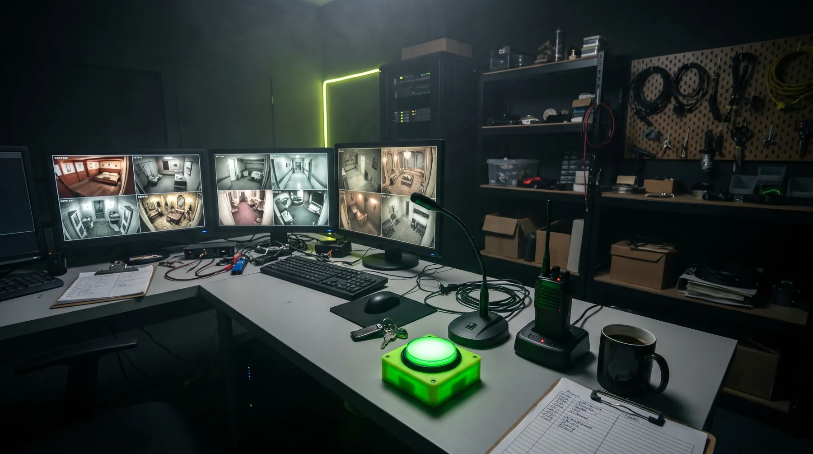

Preguntas frecuentes

¿Cuánto antes tenemos que llegar?
15 minutos antes de la hora. Os explicamos las normas y guardamos vuestras cosas en taquillas.
¿Hay edad mínima?
Depende de la sala: desde 6 años en El camarote del capitán Eduardo hasta 18 en El manicomio de San Tomás. Los menores de 14 juegan con un adulto. La edad mínima aparece en la ficha de cada sala.
¿Puedo cambiar la fecha o cancelar?
Sí, gratis hasta 48 horas antes. Abre un ticket en la categoría "Reservas y cambios de fecha" y te lo cambiamos.
¿Cómo funcionan los bonos regalo?
Valen para cualquier sala durante 12 meses. Si el código no funciona, abre un ticket en "Bonos y tarjetas regalo" con una foto del bono.
¿Las salas son accesibles?
La acampada de Sol, El despertar del Perro y Operación David son accesibles en silla de ruedas. Avísanos al reservar y lo preparamos.
¿Qué pasa si no escapamos a tiempo?
Nadie se queda dentro de verdad. El game master os enseña la solución y os hacemos la foto igualmente.
Me he dejado algo en la sala
Abre un ticket en "Objetos perdidos" diciendo la sala y la hora. Guardamos los objetos 30 días en recepción.
¿No encuentras tu respuesta?
Abre un ticket y te contestamos desde tu área de cliente.